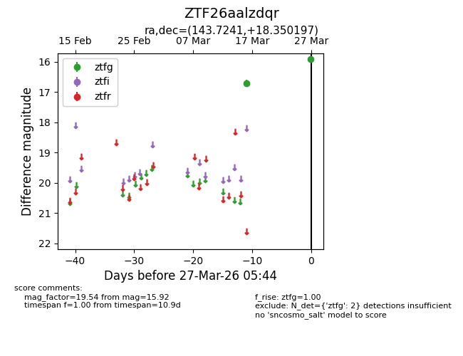
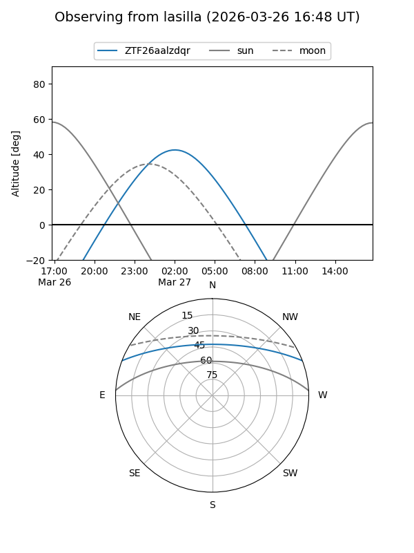
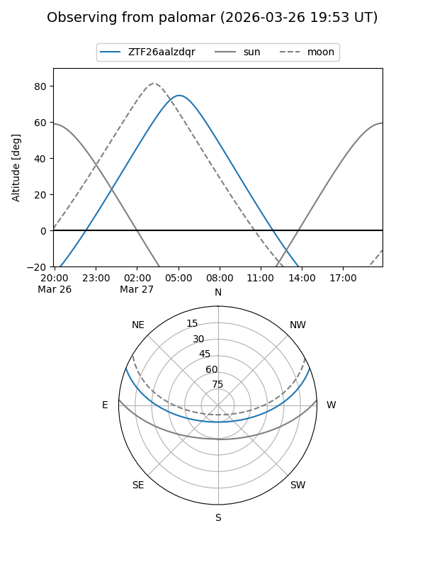

ZTF26aalzdqr
Target ZTF26aalzdqr at 2026-03-27 05:47
Aliases and brokers:
FINK: link
Lasair: link
ALeRCE: link
alt names
ZTF26aalzdqr (ztf,fink_ztf)
Coordinates:
equatorial (ra, dec) = 143.7241,+18.35020
equatorial (HMS+DMS) = 09:34:53.77,+18:21:00.71
galactic (l, b) = (213.1696,+44.12615)
Flags:
Photometry:
last ztfg=15.92
2 ztfg detections
Lightcurve

Visibility


Additional plots